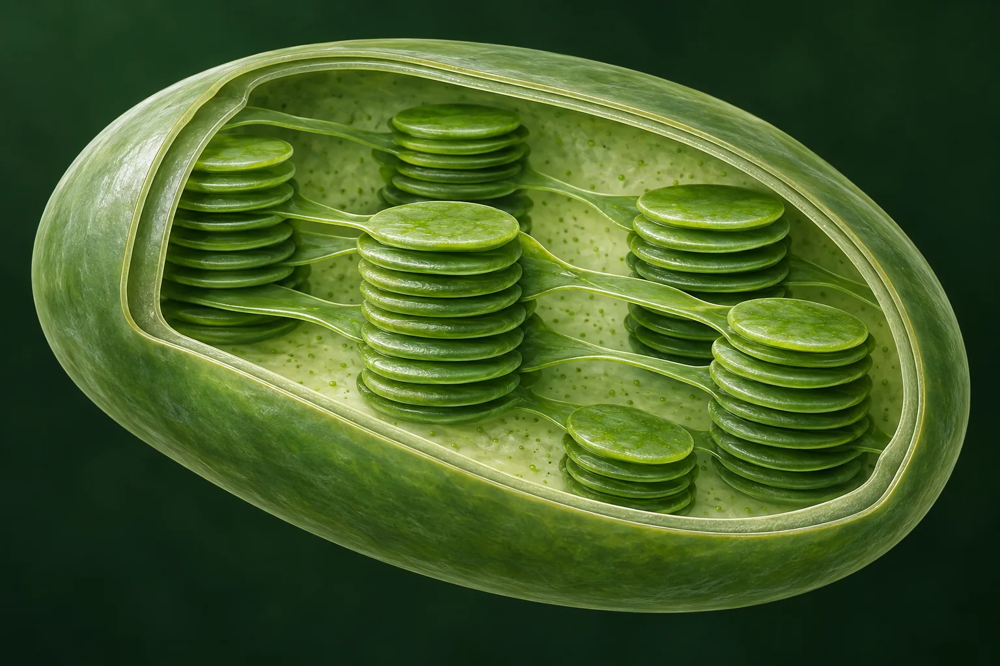

Quick reference: the numbers behind the color
- Chlorophyll a peaks (diethyl ether)
- 427.8 nm Soret, ε 111,700 M⁻¹cm⁻¹ · 660 nm Qy, ε ≈ 85,000
- Chlorophyll a in the green
- ε ≈ 2,770 at 550 nm: 2.5% of the Soret peak, 3.3% of Qy; minimum ε ≈ 1,740 at 504 nm
- Chlorophyll b peaks (diethyl ether)
- 453 nm ε 159,100 · 643 nm ε 57,050 · at 550 nm ε ≈ 7,130
- Whole-leaf absorptance at 550 nm
- 50% to 90% (lettuce to evergreen broadleaf), versus 80% to 95% for blue and red
- Photon energy
- E = 1239.84 / λ eV·nm: blue 450 nm 2.76 eV, green 550 nm 2.25 eV, red 680 nm 1.82 eV
- Ground sunlight peak (AM1.5G)
- 495 nm per-wavelength irradiance; 500 to 600 nm carries 35% of 400 to 700 nm energy
- LHCII antenna, per monomer
- 8 Chl a + 6 Chl b + 4 xanthophylls (spinach, 2.72 Å structure, 2004)
- Primary charge separation (PSII)
- ~3 ps component after P680 excitation; quantum yield approaches 1
- Electronic coherence in FMO
- Reported ≥660 fs at 77 K (2007); re-analysed as ~60 fs (2017)
- Fluorescence of chlorophyll a (ether)
- Peak 666 nm, quantum yield 0.32. Leaf emission peaks near 685 and 740 nm
Level 1
The everyday answer
Sunlight contains every visible wavelength. A leaf keeps most of the blue and red, and lets a larger share of the green escape.
Grass contains chlorophyll, held inside chloroplasts in the mesophyll cells beneath the leaf's transparent upper skin. Chlorophyll absorbs blue-violet and red light strongly and green light weakly. The green light that is not absorbed is scattered back out of the leaf or transmitted through it. Some of that light reaches your eye, so the grass looks green.
That is a real and correct answer. The measured spectra in the bench above make it quantitative: at 550 nm, chlorophyll a in solution absorbs at 2.5% of the strength it shows at 428 nm. The molecule is not slightly less interested in green light; it is almost transparent to it, in solution. What happens inside a leaf is a different and more interesting number, and it is the subject of the next level.
Two things to hold onto before going deeper. Chlorophyll is doing a job, not decorating: it converts light energy into chemical energy, and its color is a side effect of how it does that job. And the word "green" describes your visual system's response to the relative mix of wavelengths leaving the leaf, not a property the leaf possesses on its own.
Level 2
Green light is not simply "rejected"
A leaf is not a green mirror. Whole leaves absorb most of the green light that hits them; they just absorb a little less of it than blue or red, and your eye amplifies the difference.
The textbook picture invites a wrong inference: if chlorophyll barely absorbs green, then leaves must bounce green light away. Measured with an integrating sphere, an ordinary land-plant leaf absorbs 50% to 90% of light at 550 nm (lettuce at the low end, evergreen broad-leaved trees at the high end), against 80% to 95% for blue and red. The gap between "2.5% of peak" for the molecule and "50 to 90%" for the leaf is the whole story of this level.
Two optical effects, both named in the leaf-physiology literature, explain the gap:
- Sieve effect. Pigment is packed into chloroplasts, not spread evenly. At strongly absorbed wavelengths a photon that misses a chloroplast passes through a clear gap, so packaging reduces absorptance relative to a uniform solution. At weakly absorbed wavelengths the loss is small, because a single chloroplast was never going to capture the photon anyway.
- Détour effect. Cell walls, air spaces and organelles scatter light, lengthening its path through the leaf by roughly threefold in a standard model. For red and blue that adds only about 11% to absorptance (they were nearly all absorbed already). For green, where each pass absorbs little, a three-times-longer path multiplies the chance of absorption, and the gain is large.
The consequence is that green light penetrates deeper and is absorbed lower down. On a per-chlorophyll basis, the chloroplasts at the bottom of a leaf receive well under 20% of the green light that the top ones do, but for red and blue that number is under 10%. In strong white light, where the upper chloroplasts are already saturated, an added green photon is more likely to drive extra photosynthesis than an added red photon, because it reaches chloroplasts that still have capacity. That is the finding of Terashima and colleagues (2009) in sunflower leaves, and it is why "green light is useless to plants" is on the mistakes list below.
Human color vision also matters. Cone responses are compared against each other, so a leaf that returns 20% of green and 8% of red and blue is seen as vividly green even though it is, in absolute terms, a dark object that swallowed most of the light.
| Wavelength | Chlorophyll a in ether (ε, M⁻¹cm⁻¹) | Relative to Soret peak | Typical whole-leaf absorptance | Where in the leaf it is absorbed |
|---|---|---|---|---|
| 430 nm (blue-violet) | ≈ 109,000 (Soret peak 111,700 at 427.8 nm) | ≈ 98% | 80% to 95% | Upper palisade |
| 450 nm (blue) | ≈ 3,200 for Chl a alone; the Soret band is narrow. Chl b peaks here (159,100) and carotenoids absorb 425 to 500 nm | 2.9% | 80% to 95% | Upper palisade; also flavonoids in vacuoles and carotenoids, which absorb blue but transfer to chlorophyll with variable efficiency |
| 504 nm (blue-green) | ≈ 1,740 (minimum) | 1.6% | lower than 550 nm in most species; carotenoids help | Distributed through the depth |
| 550 nm (green) | ≈ 2,770 | 2.5% | 50% to 90% | Distributed; reaches spongy mesophyll and abaxial chloroplasts |
| 660 nm (red) | ≈ 85,000 (Qy peak) | 76% | 80% to 95% | Upper palisade |
| 700 to 750 nm (far red) | ≈ 450 at 700 nm and falling | < 0.5% | Falls steeply; the "red edge" used in remote sensing | Mostly transmitted or reflected |
Solution values: PhotochemCAD 2.1a (chlorophyll a in diethyl ether). Leaf ranges: Inada 1976 as summarised by Terashima et al. 2009. A leaf's exact curve depends on species, growth light, thickness and chlorophyll content.
Level 3
Photon energy rules out the tempting explanation
Green photons are not too weak. They carry more energy than red photons, and chlorophyll absorbs red superbly.
Light arrives in photons, and a photon's energy depends only on its wavelength:
where h is Planck's constant and c the speed of light. Shorter wavelength, more energy per photon. A green photon at 550 nm carries 2.25 eV; a red photon at 680 nm carries 1.82 eV. If "not enough energy" explained the green gap, chlorophyll would have to reject red even harder. It does the opposite: the red Qy band is its second-strongest absorption.
So the amount of energy in isolation is the wrong variable. What matters is whether the photon's energy matches an allowed transition of the absorbing molecule, and how strongly that transition couples to light. A molecule is not a bucket that fills with any photon above a threshold; it is a set of discrete electronic states with rules about which jumps are permitted and how probable each one is. That is Level 4.
One useful side fact: per mole of photons, 550 nm light delivers about 217 kJ. Photosynthesis spends two photons (one per photosystem) for every electron it moves from water to NADP⁺, so energy per photon is not the constraint. Matching is.
| Color | Wavelength | Energy (eV) | kJ per mol photons | Chlorophyll a response |
|---|---|---|---|---|
| Violet | 400 nm | 3.10 | 299 | Strong (Soret band, 57% of peak) |
| Blue | 450 nm | 2.76 | 266 | Weak for Chl a alone (2.9%); Chl b peaks at 453 nm and carotenoids cover it |
| Blue-green | 500 nm | 2.48 | 239 | Weakest region (≈1.6% of peak at 504 nm) |
| Green | 550 nm | 2.25 | 218 | Weak (2.5% of peak) |
| Yellow | 580 nm | 2.14 | 206 | Weak (6%); Qx features appear |
| Orange | 615 nm | 2.02 | 194 | Q vibronic side band (≈12% of peak) |
| Red | 660 nm | 1.88 | 181 | Strong (Qy peak, 76% of Soret) |
| Deep red | 680 nm | 1.82 | 176 | Falling; in vivo P680 and P700 sit here |
| Far red | 720 nm | 1.72 | 166 | Near zero for Chl a; Chl d and f absorb here |
1 eV per photon = 96.485 kJ/mol. Energies rounded from E = 1239.84 eV·nm / λ (CODATA 2018 constants).
Level 4
Chlorophyll is a molecular antenna with rules
A conjugated ring of delocalized π electrons produces a few strong, allowed transitions. Green falls between them.
Chlorophyll a (C₅₅H₇₂MgN₄O₅, 893.5 g/mol) is a chlorin: a nearly planar ring of four pyrrole-type units, one of them partly reduced, joined by methine bridges around a central magnesium ion, with a long phytol tail that anchors it in protein and membrane. Around the ring, π electrons are delocalized over an 18-atom aromatic path. Delocalized electrons have closely spaced molecular orbitals, and the energy differences between the highest occupied and lowest unoccupied orbitals fall in the visible range. That is what makes chlorophyll a pigment at all.
A photon is absorbed only when three things line up: its energy matches an allowed gap between orbitals, the transition is permitted by symmetry (selection rules), and the transition dipole moment is large, meaning the electron redistribution that the jump produces couples strongly to the light's oscillating electric field. The strength of a band is measured by its oscillator strength, and the measured extinction coefficient in the bench above is the practical readout of it.
For chlorophyll a the strong bands are:
- Soret (B) band, peak 427.8 nm in ether: a transition to a higher excited singlet state with very large oscillator strength.
- Qy band, peak 660 nm in ether: the transition to the lowest excited singlet state, polarized along the molecule's y axis, strong.
- Qx band, near 578 and 615 nm as weak shoulders: polarized along x, much weaker in chlorophyll a because the reduced ring breaks the symmetry that would make it strong.
Between the Soret band and the Q bands, in the 480 to 600 nm window, there is no strong allowed electronic transition. Weak vibronic features and the tail of Qx keep the window from being empty, which is why the molecule still absorbs at a few percent of peak there. Bound in a protein, each chlorophyll's bands shift by several nanometres and broaden, and the ensemble of shifted copies is what a leaf actually shows; in photosystem II the reaction-center chlorophylls absorb at 680 nm, in photosystem I at 700 nm.
Pigments compared: the same ring, tuned differently
| Pigment | Ring type and key substituent | Solution maxima (nm) | In vivo range (nm) | Who uses it | What it adds |
|---|---|---|---|---|---|
| Chlorophyll a | Chlorin; C7 methyl | 427.8, 660 (ether) | ≈ 670 to 700 (P680, P700) | All oxygenic phototrophs: plants, algae, cyanobacteria | The reaction-center pigment; sets the green gap |
| Chlorophyll b | Chlorin; C7 formyl | 453, 643 (ether) | ≈ 650 to 660 | Land plants, green algae | Fills in blue-green and orange next to Chl a; antenna only |
| Chlorophyll d | Chlorin; C3 formyl | ≈ 400, 697 (methanol) | ≈ 710 to 720 | Acaryochloris marina | Far-red oxygenic photosynthesis under other algae |
| Chlorophyll f | Chlorin; C2 formyl | 406, 706 (methanol) | ≈ 720 to 750 | Some cyanobacteria (reported 2010, from stromatolites) | The reddest chlorophyll known; extends oxygenic photosynthesis into far red |
| Bacteriochlorophyll a | Bacteriochlorin (two reduced rings) | ≈ 358, 577, 771 (ether) | 800, 850, 875 (LH2, LH1) | Purple bacteria | Near-infrared harvesting; strong Qx |
| Carotenoids (β-carotene, lutein, zeaxanthin) | Linear polyene, 9 to 11 conjugated C=C | ≈ 425 to 500 (three-peaked) | ≈ 450 to 520 | All phototrophs | Blue-green harvesting, triplet quenching, non-photochemical quenching |
| Phycobilins (phycoerythrin, phycocyanin) | Open-chain tetrapyrrole on protein | ≈ 565 / ≈ 620 | ≈ 540 to 650 | Cyanobacteria, red algae | Fills the green gap for organisms living under green-filtered water |
| Siphonaxanthin | Keto-carotenoid | ≈ 535 | ≈ 540 | Deep-zone green algae (Codium, Ulva) | Absorbs green and transfers to Chl at efficiency ≈ 1.0; those algae look nearly black |
Solution maxima depend on solvent by a few nm. Chlorophyll a and b values are from PhotochemCAD (diethyl ether); other values from the reviews and structure papers in the sources list, rounded. The point of the table: evolution never redesigned the ring; it added substituents, pairs and partners.
Level 5
Why two strong peaks, and what happens to the extra blue energy
The ring's frontier orbitals give one strong low transition and one strong high transition. Everything absorbed above the lowest excited state relaxes down to it before it is used.
The standard explanation is Gouterman's four-orbital model (1961). Take the two highest occupied π orbitals and the two lowest unoccupied ones. Four single-electron promotions are possible, and because the orbitals are nearly degenerate the promotions mix. In the mixture where the two transition dipoles add, you get an intense band: the Soret (B) band. In the mixture where they nearly cancel, you get weak bands: the Q bands. In a symmetric porphyrin the cancellation is nearly complete, so Q is faint and the molecule looks red-purple.
Chlorophyll is a chlorin. Reducing ring IV breaks the four-fold symmetry and lifts the degeneracy, so the cancellation in the y-polarized combination fails. Qy gains oscillator strength (76% of the Soret peak in ether) and shifts to the red, while Qx stays weak. That single structural change is why chlorophylls have two strong absorptions rather than one, and why the strong ones sit at opposite ends of the visible spectrum with a weak middle.
Kasha's rule: the blue photon's surplus is heat
A blue photon (2.9 eV at 428 nm) promotes the molecule to S2, the Soret state. It does not stay there. Internal conversion and vibrational relaxation drop it to S1, the Qy state, on a sub-picosecond timescale, dumping about 1 eV into molecular vibrations and the surroundings. Kasha's rule (1950) states the general pattern: emission and photochemistry proceed from the lowest excited state of a given multiplicity, whatever state was first populated. So a blue photon and a red photon end up in the same S1 state doing the same chemistry; the blue one simply arrived with more energy and wasted the surplus.
This has a practical consequence for the color question: a leaf gains nothing chemically from blue over red, per photon. The advantage of absorbing blue is having more photons to absorb, not having stronger ones. And it means the fate of every absorbed photon, whatever its color, is decided in S1, where three exits compete: transfer to a neighbour (fastest, the normal path), fluorescence (a few nanoseconds in solution, mostly outcompeted in a leaf), and intersystem crossing to the triplet state, which can sensitize singlet oxygen unless a carotenoid quenches it.
| Band | Peak (ether) | Energy | ε (M⁻¹cm⁻¹) | Polarization | Four-orbital origin | Fate after absorption |
|---|---|---|---|---|---|---|
| Soret (B) | 427.8 nm | 2.90 eV | 111,700 | x and y, overlapping | Constructive combination of the four promotions | Internal conversion to S1 in under 1 ps; ≈1 eV to heat |
| Qx | ≈ 578, 615 nm | 2.14, 2.02 eV | ≈ 7,200; 13,100 | x axis | Destructive combination; stays weak in chlorins | Relaxes to S1 (Qy) within picoseconds |
| Qy | 660 nm | 1.88 eV | 85,300 | y axis (through N atoms of rings I and III) | Cancellation lifted by reduced ring IV | Transfer, fluorescence (666 nm), or intersystem crossing |
| The green window | 480 to 600 nm | 2.58 to 2.07 eV | 1,700 to 7,000 | Vibronic tails of Q; no strong electronic origin | No allowed strong transition between B and Q | Same as any absorption: ends in S1. The photons that are absorbed here are fully usable. |
Level 6
A leaf is not a jar of chlorophyll
Pigments are held in protein at fixed distances and orientations, and excitations travel between them. The color comes from the molecule; the function comes from the network.
In a chloroplast, chlorophyll molecules are bound in pigment-protein complexes embedded in thylakoid membranes. The workhorse antenna of plants, LHCII, binds 14 chlorophylls per protein monomer (8 chlorophyll a, 6 chlorophyll b) and 4 xanthophylls (two luteins, one violaxanthin, one neoxanthin), and assembles into trimers around the photosystem II core. Almost every chlorophyll in a leaf is an antenna pigment. Only a handful, the "special pairs" P680 in photosystem II and P700 in photosystem I, actually initiate chemistry.
When an antenna chlorophyll absorbs a photon, the excitation is not a private property of that molecule. Neighbouring pigments a nanometre apart interact through their transition dipoles, so the excited state is shared, a collective state called an exciton. Energy then migrates through the network by a mix of coherent delocalization within tightly coupled clusters and incoherent hopping (Förster transfer) between clusters, always biased downhill in energy toward the reaction center, which is tuned to sit slightly lower than the antenna. Once at P680, the excitation drives charge separation: an electron leaves the excited chlorophyll for a nearby pheophytin within a few picoseconds, and the transient optical excitation has become a longer-lived separated charge.
So photosynthetic energy conversion is two problems, not one:
- Excitation-energy transfer: collect photons across a large area and many wavelengths and route the excitations to a small number of reaction centers before they are lost. Quantum yield of this step in healthy leaves: above 0.8, often quoted as the dark-adapted Fv/Fm ratio of about 0.83.
- Charge separation: turn the excitation into separated charge and stabilise it faster than it can recombine. Quantum yield from P680 excitation: near unity.
Calling chlorophyll "the plant's solar panel" is therefore incomplete in a specific way: a solar panel converts where it absorbs. A leaf absorbs in hundreds of places per reaction center and converts in one, so its performance depends on the wiring between them at least as much as on the absorber.

Timescales from photon to chemistry
| Step | Timescale | Where | What can go wrong |
|---|---|---|---|
| Photon absorption | ≈ 1 fs | Any pigment | Nothing: absorption is essentially instantaneous relative to everything downstream |
| S2 → S1 internal conversion (Kasha) | < 1 ps | Within one chlorophyll | Excess blue-photon energy becomes heat; unavoidable |
| Transfer between neighbouring chlorophylls | ≈ 100 fs to a few ps | Inside LHCII, inside the core antenna | Slow or uphill steps lengthen the excitation's exposure to loss |
| Antenna → reaction center (P680) | tens of ps | LHCII → CP43/CP47 → RC | Under excess light, NPQ deliberately diverts excitations to heat here |
| Primary charge separation | ≈ 3 ps component; ≈ 0.4 ps intrinsic at 240 K | P680 / ChlD1 → pheophytin | Recombination if the electron is not passed on to QA within ≈ 200 ps |
| Fluorescence lifetime, isolated Chl a | ≈ 6 ns | Solution | In a leaf, competing transfer makes fluorescence a minor exit; Fv/Fm ≈ 0.83 reflects that |
| Chlorophyll triplet → singlet oxygen | µs | Any chlorophyll not next to a carotenoid | Photo-oxidative damage; D1 protein is replaced at high rates as a repair strategy |
| Non-photochemical quenching, qE component | seconds to minutes | LHCII, PsbS, xanthophyll cycle | Too slow to relax after a sunfleck: a measured cost to canopy photosynthesis |
Level 7
Why did evolution keep the green gap?
There is no single experimentally established answer. Several pressures are real and probably all contribute. Here they are with their evidence and their limits.
A perfectly black leaf would absorb more photons. It is tempting to conclude that evolution failed to find one. The better framing: selection does not maximise instantaneous photon capture. It maximises reproduction under variable light, temperature, water and nutrient supply, with limited repair budgets, starting from whatever machinery the ancestors already had.
Evolution edits; it does not redesign
Chlorophyll-based reaction centers appeared early in bacteria, and oxygenic photosynthesis with chlorophyll a was operating in cyanobacteria well before the Great Oxidation Event about 2.4 billion years ago. Plants inherited the whole apparatus through endosymbiosis. Swapping the primary pigment would require coordinated changes to biosynthesis, protein binding sites, energy-transfer tuning, charge separation, photoprotection and repair, all at once.
Evidence: every oxygenic phototroph still uses chlorophyll a in its reaction centers, including those that added chlorophyll d or f to reach the far red. Limit: explains persistence, not origin.
The cheaper fix was to add, not replace
Chlorophyll b, carotenoids, phycobilins and siphonaxanthin each extend absorption into the green window without touching the reaction center. Organisms living where green light dominates, under water or under other plants, tend to carry more of them: red algae and cyanobacteria with phycobilins, deep-zone green algae that look almost black.
Evidence: pigment composition tracks light niche across taxa. Limit: land plants, in full sun, did not bother to close the gap. That absence needs its own explanation.
More light is often a liability
Reaction centers have finite throughput. In full sun a leaf collects excitation faster than downstream chemistry can use it; the excess makes chlorophyll triplets and reactive oxygen species that damage pigments, lipids and the D1 protein, which is degraded and resynthesised continuously. Plants run an elaborate dissipation system (NPQ) to throw excitation away as heat. A pigment that absorbed everything would need more of it.
Evidence: NPQ capacity and D1 turnover are large, measurable costs. Limit: a plant can already regulate; it is not obvious that absorbing less green is cheaper than quenching more.
Transmitted green feeds the leaves below
Because green penetrates, lower chloroplasts and lower leaves receive usable light that a black upper layer would have taken. Terashima's sunflower measurements show that in strong white light, extra green light raises whole-leaf photosynthesis more than extra red light does, because it reaches chloroplasts that still have capacity.
Evidence: direct measurement within leaves. Limit: explains why the existing spectrum works well at plant and canopy scale, not why the molecule's spectrum arose.
Avoid the noisiest part of the input
A network model in which the antenna is tuned to minimise fluctuations in excitation delivery, not to maximise absorption, reproduces the broad shape of the absorption spectra of green plants, purple bacteria and green sulfur bacteria. For plants in sunlight, that means absorbing on either side of the solar peak. Level 8 has the details.
Evidence: a theoretical model that fits three very different spectra with one principle. Limit: theory. It predicts; it has not been tested by manipulation.
Maybe chlorophyll took the leftovers
Retinal-based phototrophy (as in halobacteria) absorbs green light most strongly, around 500 to 600 nm, and is biochemically simpler. One proposal is that early retinal-using organisms occupied the green part of the spectrum first, so chlorophyll-based photosynthesis evolved to exploit the blue and red that were left. Earth would then have looked purple before it looked green.
Evidence: the complementarity of the two absorption spectra, and retinal's simplicity. Limit: speculative; no fossil or molecular-clock test has confirmed the sequence.
| Explanation | Explains origin? | Explains persistence? | Type of evidence | Status (as of 2026) |
|---|---|---|---|---|
| Molecular electronic structure (Levels 4 and 5) | Yes: the spectrum follows from the chlorin ring | Yes | Spectroscopy, quantum chemistry | Established |
| Historical constraint and endosymbiosis | No | Yes | Phylogeny, comparative biochemistry | Established as a constraint |
| Accessory-pigment niche partitioning | Partly: explains who closes the gap | Yes, for those taxa | Comparative ecology | Well supported |
| Photoprotection and repair economics | No | Plausibly | Physiology, NPQ and D1 turnover measurements | Supported as a cost; link to spectrum untested |
| Canopy and intra-leaf light sharing | No | Yes, at organism scale | Direct measurement (Terashima 2009) | Supported |
| Quiet antenna (Arp et al. 2020) | Proposes a design principle | Yes, if the principle holds | Theoretical model matching three spectra | Theoretical, testable |
| Purple Earth (DasSarma and Schwieterman 2018) | Proposes a sequence | No | Spectral complementarity argument | Hypothesis |
Level 8
The "quiet antenna" hypothesis
What if the antenna is optimised for stability of output rather than quantity of input? A 2020 model says that alone reproduces the shape of plant absorption.
Sunlight at a leaf is not steady. Clouds, wind-moved leaves, sunflecks in a canopy, and the leaf's own changing geometry make the input fluctuate over milliseconds to minutes, and the fluctuations are largest where the spectrum is most intense. Downstream, the reaction centers and the electron-transport chain have finite capacity. A surge above capacity is wasted or damaging; a dip below it starves the chain.
Arp, Kistner-Morris, Aji, Cogdell, van Grondelle and Gabor (Science, June 2020) treated the antenna as a network with two absorbing channels receiving a noisy spectral input, and asked which pair of absorption wavelengths minimises fluctuations in the power delivered to the reaction center while keeping power conversion efficient. The answer, for a smooth input like the solar spectrum at the ground, is two channels placed on the slopes of the input spectrum, on either side of its peak, rather than one channel at the peak. Fluctuations in the two channels then partly cancel, in the spirit of a balanced or noise-cancelling input.
Fed the appropriate input spectrum, the model reproduces the broad features of absorption in green plants (peaks either side of the green solar maximum), purple bacteria (near-infrared bands where their filtered light is strongest) and green sulfur bacteria. One principle, three very different organisms. The press summary was "why plants are not black": absorbing at the peak would maximise raw capture but maximise noise with it.
What the model does not do: it does not derive chlorophyll's spectrum from first principles, it does not include the canopy, and it has not been tested by building an antenna with a different spectrum and measuring fitness. It should be presented as a compelling organising principle that reproduces observed spectra and yields testable predictions, alongside historical constraint, electronic structure, photoprotection and canopy optics, not as the final word on why grass is green.
Level 9
Open-system quantum physics
The antenna is a quantum system coupled to a warm, wet, vibrating environment. The live question is not whether it is quantum, but whether coherence does useful work under those conditions.
At the microscopic level a light-harvesting complex is an open quantum system: electronic excitations that are quantum objects, coupled to molecular vibrations, protein motion, surrounding water, thermal fluctuations and the electromagnetic field. If the pigments were isolated, an excitation would evolve as a coherent superposition spread over several molecules. Strong coupling to the environment scrambles the phases, producing decoherence and transport that looks like classical hopping.
But environmental coupling is not purely destructive. Dephasing can help an excitation escape a local energy trap, or bridge states that would otherwise be poorly connected. This is environment-assisted quantum transport (ENAQT), proposed independently in 2008 by Mohseni, Rebentrost, Lloyd and Aspuru-Guzik and by Plenio and Huelga: transport efficiency peaks at an intermediate noise level, neither fully coherent nor fully incoherent. A noisy environment, at the right noise level, is a feature.
The experimental story has a clear arc. In 2007, two-dimensional electronic spectroscopy of the FMO complex from a green sulfur bacterium, at 77 K, showed oscillating signals that were read as electronic coherence lasting at least 660 fs, far longer than expected, and the paper suggested wavelike sampling of transfer paths. In 2010 similar beats were reported at 277 K. Over the following decade the beats were re-examined: vibrational coherence, correlated vibrations and mixed vibronic states produce similar signatures, and a 2017 re-measurement of FMO concluded that electronic coherence decays within about 60 fs, too fast to steer transport. A 2020 multi-author review titled "Quantum biology revisited" reset the consensus: long-lived electronic coherence is not what makes light harvesting efficient; the productive questions are about how electronic states, vibrations, dissipation and protein structure work together.
So the frontier question is precise: do nontrivial quantum-coherent dynamics materially improve biological energy transport under physiological conditions? Current work on exciton-vibrational coupling and on which vibrational modes are protected from noise is the serious version of the question. "The exciton tries every path at once" is the pop version, and it is not supported.
| Year | Result | System and conditions | Reading |
|---|---|---|---|
| 2007 | Engel et al., Nature: quantum beats in 2D electronic spectra lasting ≥ 660 fs | FMO complex, Chlorobium tepidum, 77 K | Interpreted as long-lived electronic coherence; "wavelike" transfer proposed |
| 2008 | ENAQT proposed (Mohseni et al.; Plenio and Huelga) | Theory, FMO as the model network | Efficiency is maximal at intermediate dephasing |
| 2010 | Panitchayangkoon et al., PNAS: coherence at 277 K | FMO, physiological temperature | Coherence survives warmth, at least for hundreds of fs |
| 2013 to 2016 | Vibronic reinterpretations | Theory and model dimers | Ground-state vibrational coherence and vibronic mixing mimic the beats |
| 2017 | Duan et al., PNAS: electronic decoherence in ≈ 60 fs | FMO, re-measured with 2D spectroscopy | "Nature does not rely on long-lived electronic quantum coherence" |
| 2020 | Cao et al., Science Advances: "Quantum biology revisited" | Review by 17 authors across the field | Consensus reset: coherence is real but short; vibronic and structural questions remain open |
| 2020s | Exciton-vibrational coupling; single-complex spectroscopy | LHCII, PSII cores, model systems | Which vibrations couple, and whether any are protected from noise |
"Is photosynthesis quantum?" is the wrong question
Every electronic excitation and every bond is quantum mechanical, so the answer is trivially yes. The question with content is whether coherence, phase relationships between states, survives long enough in a warm protein to change where energy goes. Decoherence times of tens of femtoseconds against transfer times of hundreds of femtoseconds to picoseconds say: not by much, and not the way the 2007 headlines implied.
Level 10
The frontier research answer
At research depth, "why is grass green?" splits into seven programs, each with its own methods and its own version of the question.
| Program | Its version of the question | Methods | What a result looks like | Open problem |
|---|---|---|---|---|
| 1. Electronic-structure theory | How do the ring, Mg, substituents and the protein's electrostatics set the band positions and strengths? | TD-DFT, multireference methods, QM/MM with protein environments | Site energies of each of LHCII's 14 chlorophylls to within a few nm | Accurate excited states of chlorins in protein remain expensive and sensitive to method |
| 2. Exciton and vibronic physics | How do electronic excitations mix with quantised vibrations into states that are neither purely electronic nor purely vibrational? | Frenkel-exciton and vibronic Hamiltonians, 2D spectroscopy | Assignment of every beat in a 2D spectrum to an electronic, vibrational or mixed origin | Which vibronic resonances, if any, speed transfer in real complexes |
| 3. Non-equilibrium statistical mechanics | What are the efficiency and fluctuation limits of a driven, dissipative converter with irreversible charge separation? | Quantum thermodynamics, stochastic thermodynamics, network models | Bounds relating power, efficiency and noise (the quiet-antenna model is one instance) | Connecting abstract bounds to the measured spectra of real organisms |
| 4. Open quantum systems | Does the environment only destroy coherence, or do specific couplings direct energy flow? | HEOM, Redfield and Förster theories, ENAQT models | Transfer efficiency versus dephasing rate for a real Hamiltonian | Whether nature sits at the ENAQT optimum by design or by coincidence |
| 5. Ultrafast and single-molecule spectroscopy | What does one complex do, as opposed to the average of a billion? | 2D electronic spectroscopy, single-molecule fluorescence, cryo-EM | Distributions of transfer times and quenching states across individual LHCII trimers | Photobleaching and low signal at physiological temperature |
| 6. Evolutionary optimisation | What is selection actually optimising: average capture, variance suppression, damage avoidance, repair cost, growth in shade, or total fitness? | Comparative genomics, ancestral reconstruction, fitness modelling | A model in which one objective reproduces the spectra of several lineages | Manipulative tests: change the spectrum, measure fitness |
| 7. Artificial photosynthesis and quantum design | Can synthetic systems combine strong absorption, fast transport, regulation and damage control the way antennae do? | Synthetic chromophore arrays, DNA scaffolds, quantum-dot antennas | Artificial antennas whose efficiency is robust to noise and light fluctuation | Self-repair and regulation, the parts biology does that materials do not |
All levels at once
The answer in one sentence, at every depth
Each is true. Each is complete for someone. Move the dial to see how the same fact changes shape.
Grass is green because green light bounces off it into your eyes.
Chlorophyll absorbs red and blue light more strongly than green.
Chlorophyll's conjugated π-electron system has strong allowed electronic transitions in the blue and red, with weak oscillator strength in the green.
Protein-bound chlorophylls form coupled excitonic networks that collect and route excitation energy to reaction centers while regulating dissipation.
The spectrum reflects inherited molecular machinery shaped by selection for reliable fitness, not perfect absorption.
Avoiding parts of the strongest, noisiest solar input may stabilise excitation delivery to finite-capacity reaction centers.
The spectral density of sunlight, the quantum states of pigment-protein complexes, vibronic coupling, environmental decoherence, irreversible charge separation and evolutionary constraints jointly create a non-equilibrium light-harvesting system with a relative absorption minimum in the green.
Check your picture
Ten common mistakes
Each of these appears in textbooks, articles or answer engines. Each is wrong in a specific, checkable way.
Wrong: "Leaves reflect green light."
Right: Leaves absorb 50% to 90% of green light. They reflect and transmit a somewhat larger share of green than of red or blue, and vision reads the ratio. A leaf is a dark object with a green tint, not a green mirror.
Wrong: "Green light is useless for photosynthesis."
Right: Absorbed green photons drive photosynthesis at the same quantum yield as red. In strong white light, added green raises leaf photosynthesis more than added red, because it reaches unsaturated chloroplasts deeper in the leaf.
Wrong: "Green photons do not have enough energy."
Right: A 550 nm photon (2.25 eV) carries more energy than a 660 nm photon (1.88 eV), and 660 nm is chlorophyll's second-strongest band. Absorption depends on matching an allowed transition, not on exceeding a threshold.
Wrong: "Grass glows green; chlorophyll emits green light."
Right: Chlorophyll fluoresces red (666 nm in ether; 685 and 740 nm from a leaf), weakly, and never green. The color you see is absorption's leftover, not emission.
Wrong: "Blue photons do more work than red ones because they have more energy."
Right: Kasha's rule: the excitation relaxes to S1 in under a picosecond, and the surplus becomes heat. Per absorbed photon, blue and red drive the same chemistry.
Wrong: "A black leaf would obviously be better, so evolution failed."
Right: Selection optimises fitness under variable light with finite repair budgets, not photon count. Photoprotection costs, canopy sharing and (possibly) noise suppression all argue against black; and the reaction-center pigment was locked in over two billion years ago.
Wrong: "The quiet-antenna model explains why plants are green."
Right: It is a 2020 theoretical model that reproduces spectral shapes under one optimisation principle. It has not been tested by manipulation and it does not derive chlorophyll's spectrum. Cite it as a hypothesis.
Wrong: "Photosynthesis uses quantum coherence to try every path at once."
Right: The 2007 FMO coherence was re-measured in 2017 at about 60 fs, too short to steer transport, and the 2020 field review agrees. Transfer is fast because pigments are close and well-tuned, not because of long-lived superpositions.
Wrong: "Chlorophyll absorbs at exactly two wavelengths."
Right: Two strong bands, plus Qx shoulders near 578 and 615 nm, vibronic tails through the green, and protein-induced shifts and broadening in vivo. The green minimum of chlorophyll a is 1.6% of peak, not zero.
Wrong: "The magnesium ion is what makes chlorophyll green."
Right: The color comes from the π-conjugated chlorin ring. Mg²⁺ has no visible transitions of its own; it tunes and stabilises the ring, and Mg-free pheophytin is still a strongly absorbing pigment (grey-brown, with shifted bands).
Continue the investigation
Sources and reproducible data
Links checked on September 19, 2026. The spectra on this page are drawn from the tabulated datasets below by a script committed alongside the page.
- PhotochemCAD 2.1a, chlorophyll a in diethyl ether (Du et al. 1998; Dixon et al. 2005; scaled to ε = 111,700 M⁻¹cm⁻¹ at 427.8 nm per Strain et al. 1963), and chlorophyll b in diethyl ether (ε = 159,100 at 453 nm). Fluorescence quantum yield 0.32 from Weber and Teale 1957. Source of every chlorophyll number on this page.
- ASTM G173-03 reference spectra (AM1.5 global tilt), NREL. Solar curve, 495 nm peak and the 35% band share were computed from the tabulated data.
- Terashima, Fujita, Inoue, Chow and Oguchi (2009), Green light drives leaf photosynthesis more efficiently than red light in strong white light, Plant and Cell Physiology 50:684. Leaf absorptance ranges (citing Inada 1976), sieve and détour effects, intra-leaf light gradients, siphonaxanthin.
- Liu et al. (2004), Crystal structure of spinach major light-harvesting complex at 2.72 Å resolution, Nature 428:287. LHCII pigment count and arrangement.
- Arp, Kistner-Morris, Aji, Cogdell, van Grondelle and Gabor (2020), Quieting a noisy antenna reproduces photosynthetic light-harvesting spectra, Science 368:1490; arXiv preprint. The quiet-antenna model.
- Engel et al. (2007), Evidence for wavelike energy transfer through quantum coherence in photosynthetic systems, Nature 446:782. FMO at 77 K.
- Panitchayangkoon et al. (2010), Long-lived quantum coherence in photosynthetic complexes at physiological temperature, PNAS 107:12766.
- Duan et al. (2017), Nature does not rely on long-lived electronic quantum coherence for photosynthetic energy transfer, PNAS 114:8493. The 60 fs re-measurement.
- Cao et al. (2020), Quantum biology revisited, Science Advances 6:eaaz4888. Field consensus review.
- Mohseni, Rebentrost, Lloyd and Aspuru-Guzik (2008), Environment-assisted quantum walks in photosynthetic energy transfer, J. Chem. Phys. 129:174106; Plenio and Huelga (2008), Dephasing-assisted transport, New J. Phys. 10:113019.
- Gouterman (1961), Spectra of porphyrins, J. Mol. Spectrosc. 6:138. The four-orbital model. Kasha (1950), Characterization of electronic transitions in complex molecules, Discuss. Faraday Soc. 9:14. Kasha's rule.
- Chen et al. (2010), A red-shifted chlorophyll, Science 329:1318. Chlorophyll f, 706 nm.
- DasSarma and Schwieterman (2018), Early evolution of purple retinal pigments on Earth and implications for exoplanet biosignatures, Int. J. Astrobiology. The Purple Earth hypothesis.
- Greenfield, Seibert, Govindjee and Wasielewski (1997), Charge separation in the reaction center of photosystem II studied as a function of temperature, PNAS 94:4389 and the PSII kinetics literature summarised in Blankenship, Molecular Mechanisms of Photosynthesis, 3rd ed. (2021). Charge-separation timescales.
- build_spectra.py: the script that turns the tabulated PhotochemCAD and ASTM G173 data into the SVG paths on this page, with the downsampling and normalisation used.